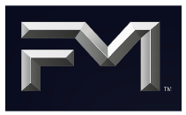
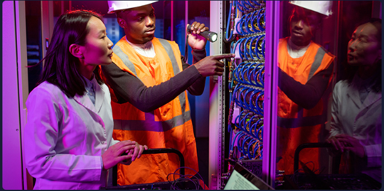
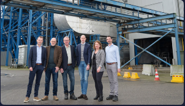
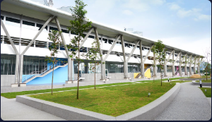
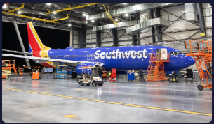

Anticiper les risques, protéger la continuité de votre activité et soutenir une progression durable font partie de nos priorités.
Rejoignez-nousDes data centers à l’industrie en passant par les énergies renouvelables, une stratégie axée sur la prévention vous permet d’anticiper les catastrophes naturelles, de prendre des décisions plus sûres et de maintenir votre activité. Le résultat : une entreprise plus résiliente, plus agile et mieux préparée pour l’avenir.

FM travaille main dans la main avec vos équipes pour comprendre comment l’alimentation, le refroidissement et les conditions du site interagissent au sein de vos data centers. Ces analyses d’ingénierie permettent de concevoir des systèmes plus solides dès le départ, pour garantir une continuité d’exploitation et prendre des décisions d’expansion sereines plutôt que réactives.
Explorez les solutions contre les risques liés aux data centersEn intégrant l’expertise d’ingénierie directement au cœur de vos opérations, FM travaille aux côtés de ses clients pour réduire les risques, protéger les systèmes critiques et permettre aux organisations d’avancer avec confiance.
En savoir plus sur notre approcheRéduction de l’exposition aux pertes de vos clients
Amélioration de la gestion des risques sur l’ensemble des sites.Des ingénieurs au service de la fiabilité de vos systèmes
Des opérations performantes en continu, même en phase de croissance.Visites techniques annuelles
L’analyse transformée en actions sur l’ensemble de vos sites.Des recherches, des outils et des analyses pratiques pour vous aider à anticiper les risques et à renforcer votre protection.
Plongez dans Insights pour obtenir des perspectives claires et pratiques sur les risques matériels complexes qui façonnent l'environnement commercial actuel.
Apprendre encore plus »Notre rapport sur les catastrophes naturelles vous aide à comprendre et anticiper les risques liés aux aléas.
Lire le rapport »Grâce à une expertise d’ingénierie pointue et une vision globale du risque, FM avance au rythme de votre activité : protéger vos opérations, éclairer vos décisions et offrir aux courtiers les solutions dont ils ont besoin pour mieux accompagner leurs clients.
En savoir plus sur nos services »Découvrez comment FM s’associe à des entreprises de tous secteurs pour protéger les systèmes critiques, réduire les risques et ouvrir la voie à de nouvelles opportunités d’investissement et de croissance.

BMC Moerdijk assure une production énergétique stable pour les agriculteurs et les communautés locales, soutenue par notre travail commun pour renforcer la résilience du site.
En savoir plus »
B. Braun redéfinit la résilience dans le secteur de la santé en faisant de son usine de Penang un modèle de réduction des risques. Résultat : des chaînes d’approvisionnement plus fiables.
En savoir plus »
Southwest Airlines redéfinit l’efficacité et la fiabilité du transport aérien en construisant des hangars résilients selon les standards de prévention les plus stricts.
En savoir plus »Tenez-vous informé de l'évolution des risques matériels grâce à nos recherches, éclairages techniques et analyses pratiques, livrés directement dans votre boîte de réception.